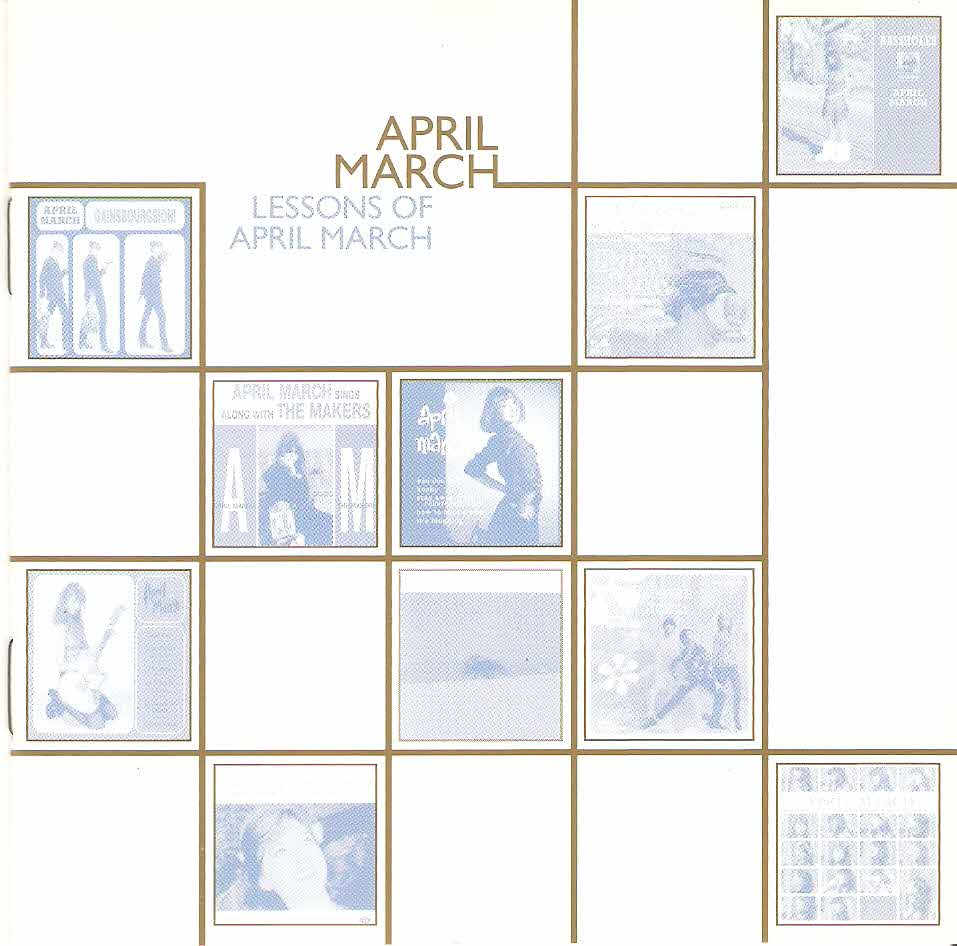
01Chick Habit
April March – Lessons of April March (1998)
orig. Laisse Tomber Les Filles
02
Bang Bang (My Baby Shot Me Down)
Mareva – Ukuyéyé By Mareva (2006)
orig. Bancy Sinatra
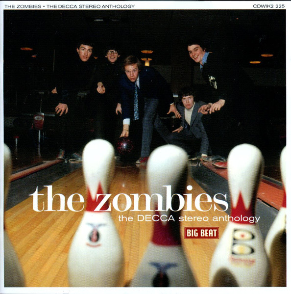
03Summertime
The Zombies – The Decca Stereo Anthology (2002)
orig. Gershwin
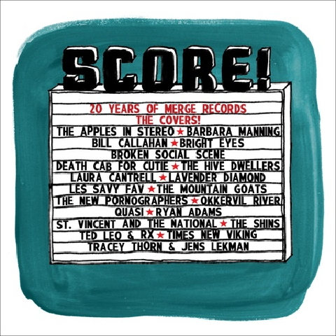
04Sleep All Summer
St. Vincent and The National – Score! 20 Years Of Merge Records: The Covers! (2009)
orig. Crooked Fingers
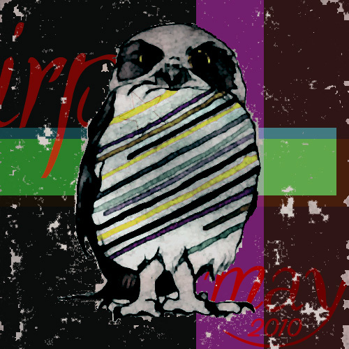
05I'm Into Something Good
The Bird And The Bee – I'm Into Something Good - Single (2010)
orig. Herman's Hermits
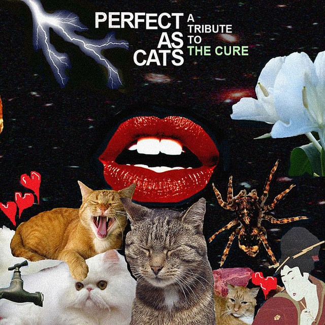
06The Caterpillar
Astrid Quay – Perfect as Cats: A Tribute to the Cure (2008)
orig. The Cure
07
Teenage Kicks
Seabear – A number of small things (2007)
orig. The Undertones
 08
08
Jungle Drum
Emiliana Torrini – Me and Armini (2008)
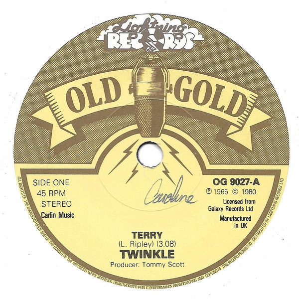
09Terry
Twinkle – Terry / Golden Lights (1981)
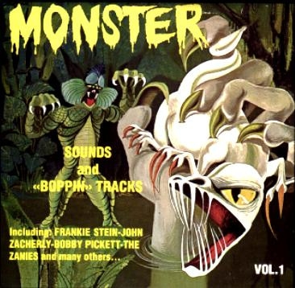
10Strollin' Spooks
Ken Nordine – Monsters Sounds & "Boppin'" Tracks Vol. 1
 11
11
Cet Air-La
April March – Chick Habit (1995)
orig. France Gall
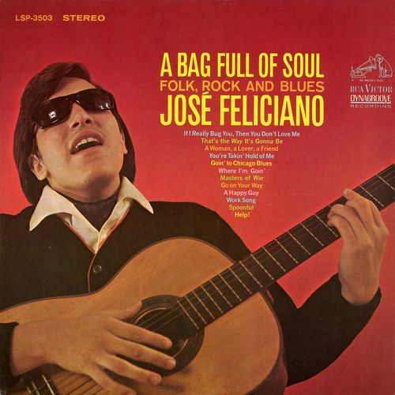
12If I Really Bug You, Then You Don't Love Me
José Feliciano – A Bag Full of Soul, Folk, Rock and Blues (2016)
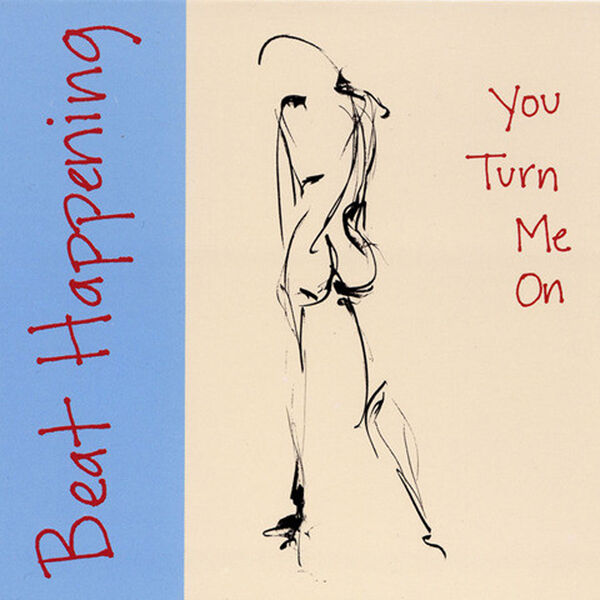
13Noise
Beat Happening – You Turn Me On (1992)
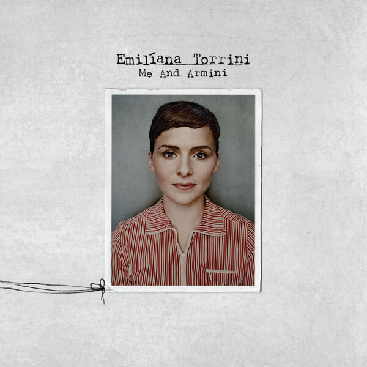
14Big Jumps
Emiliana Torrini – Me and Armini (2008)
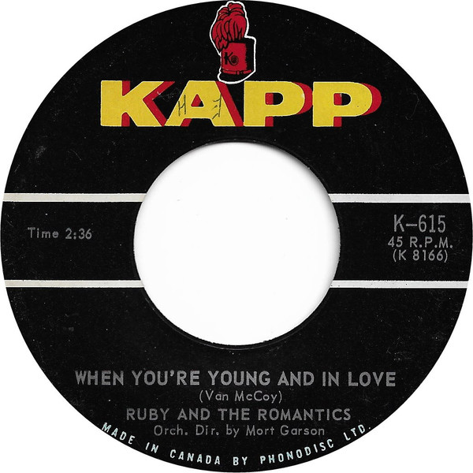
15When You're Young And In Love
Ruby And The Romantics – When You're Young And In Love / I Cry Alone (1964)
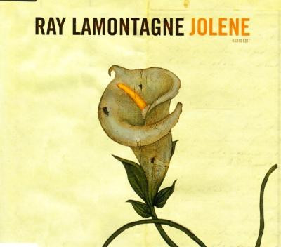
16Crazy (orig. Gnarls Barkley)
Ray Lamontagne – Jolene (2007)
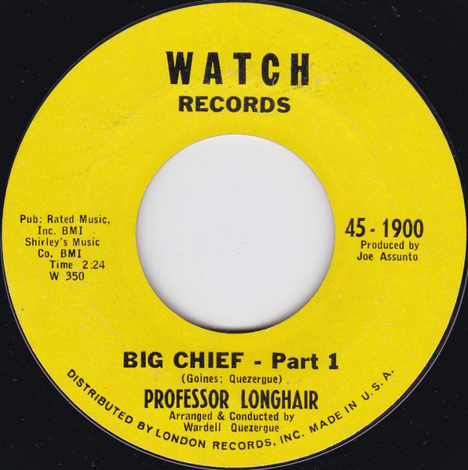
17Big Chief - Part 2
Professor Longhair – Big Chief (1964)
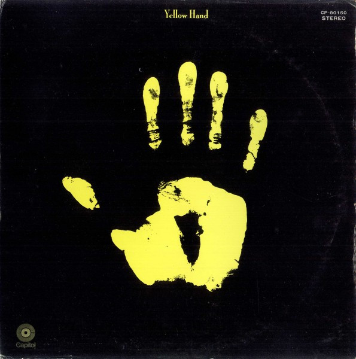
18Sell Out
Yellow Hand – Yellow Hand (1970)
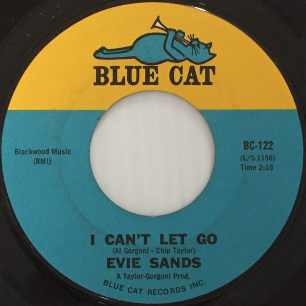
19I Can't Let Go
Evie Sands – I Can't Let Go / You've Got Me Up Tight (1965)
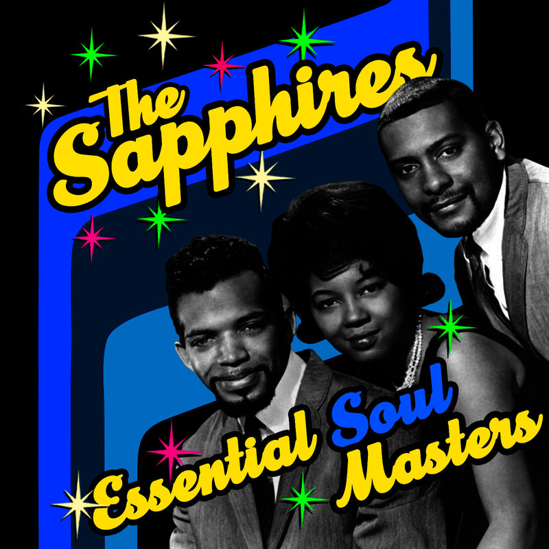
20Who Do You Love
The Sapphires – Essential Soul Masters (2011)
 21
21
Mr. Bojangles
Nina Simone – Here Comes The Sun (2012)
orig. Jerry Jeff Walker
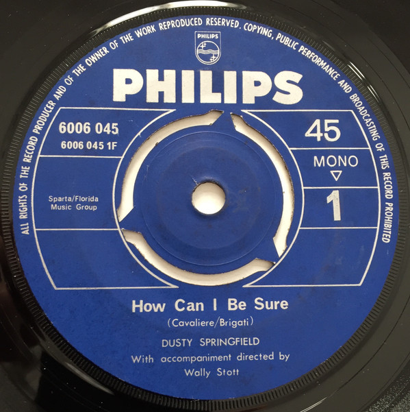
22Spooky
Dusty Springfield – How Can I Be Sure (1970)
orig. Classics IV
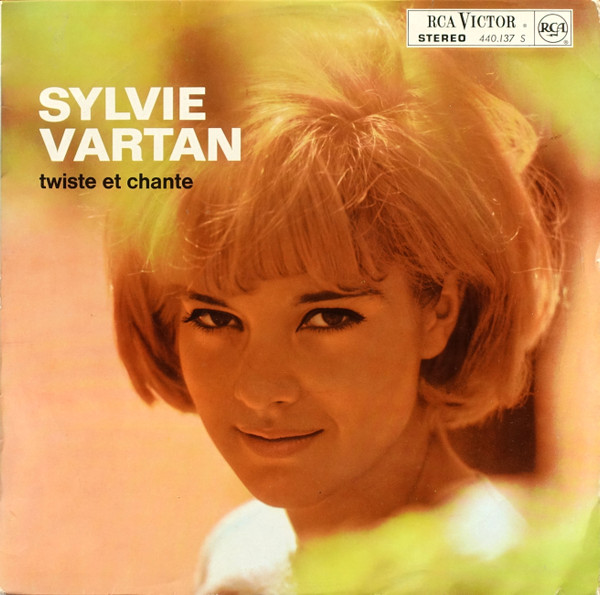
23Ne T'en Vas Pas (Comin' Home Baby)
Sylvie Vartan – Twiste et Chante (1963)
orig. Mel Tormé
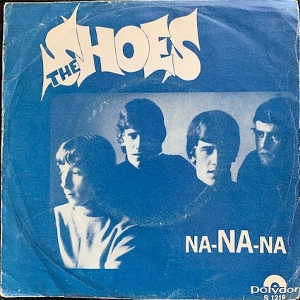
24Na-NA-Na
The Shoes – Na-NA-Na (1967)
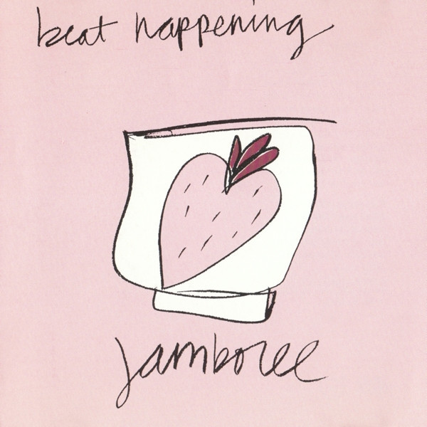
25Indian Summer
Beat Happening – Jamboree (1991)
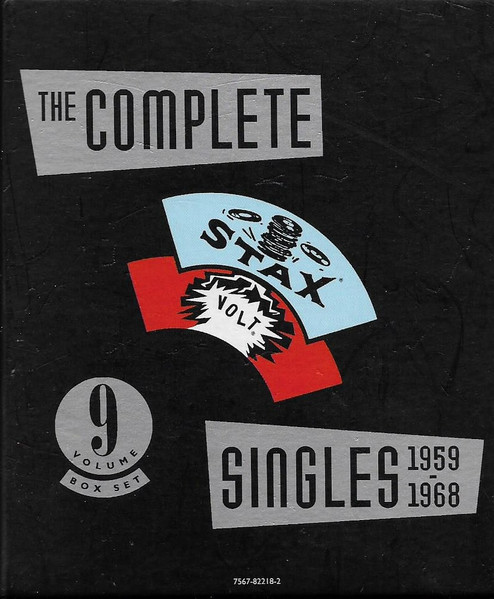
26Bar B-Q
Wendy Rene – Complete Stax/Volt Singles 1959-1968 (1991)
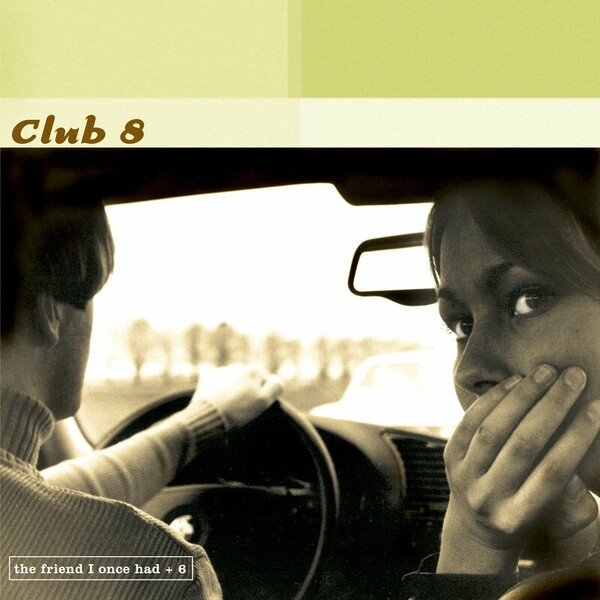
27Everlasting Love
Club 8 – The Friend I Once Had (1998)
orig. Robert Knight
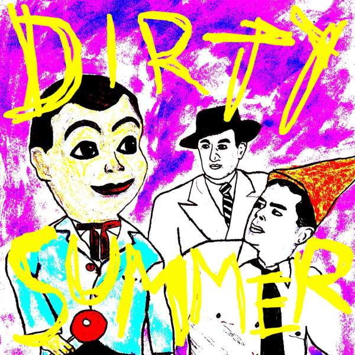
28Then He Kissed Me
Dirty Summer – Dirty Summer EP (2008)
orig. The Crystals
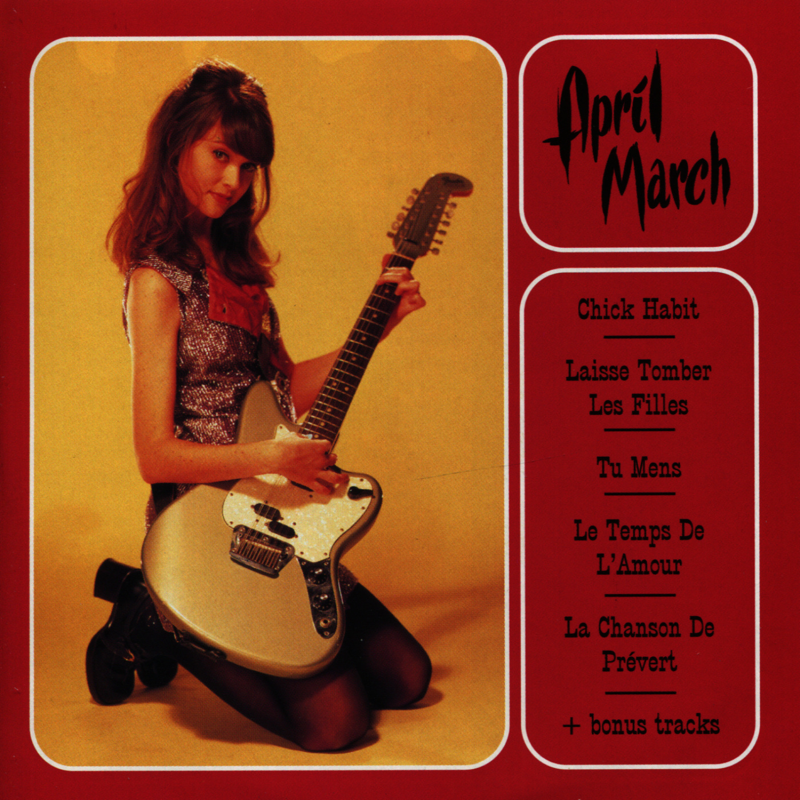
29Laisse Tomber Les Filles
April March – Chick Habit (1995)
orig. France Gall